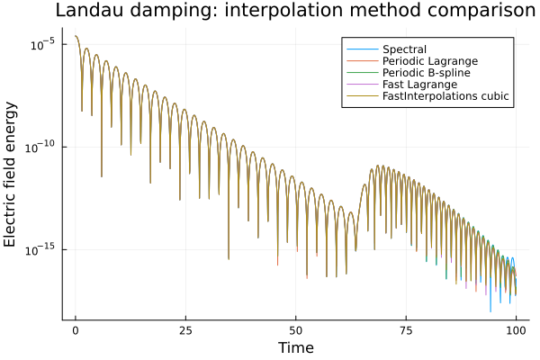

Landau damping: interpolation comparison
Problem description
Landau damping is the collisionless decay of a small electric-field perturbation in a plasma. The one-dimensional, one-velocity-dimensional (1D-1V) Vlasov-Poisson model evolves the particle distribution (f(x,v,t)), where (x) is position, (v) is velocity, and (E(x,t)) is the self-consistent electric field:
[ \frac{\partial f}{\partial t}
- v\frac{\partial f}{\partial x}
- E\frac{\partial f}{\partial v} = 0,
\qquad \frac{\partial E}{\partial x} = \rho, \qquad \rho(x,t) = \int f(x,v,t)\,dv
- \left\langle \int f(x,v,t)\,dv \right\rangle_x.
]
Subtracting the spatial mean of the density enforces the periodic Poisson problem's neutrality condition. The initial distribution is a weakly perturbed Maxwellian,
[ f(x,v,0) = \frac{1 + \epsilon\cos(kx x)}{\sqrt{2\pi}} \exp\left(-\frac{v^2}{2}\right), \qquad \epsilon = 0.001,\quad kx = 0.5. ]
For this perturbation, linear theory predicts exponential decay of the electric-field amplitude, (E \propto \exp(-\gammaL t)), with (\gammaL \approx 0.1533). The plotted electric-field energy is the spatial integral of (E^2), so its linear-theory decay rate is twice the field-amplitude rate.
Numerical method
The simulation uses Strang operator splitting to separate transport in position and velocity:
- Advect in position for half a time step with velocity (v).
- Integrate (f) over velocity to obtain (\rho), then solve the periodic Poisson equation to update (E).
- Advect in velocity for a full time step with acceleration (E).
- Complete the time step with another half-step in position.
Each transport step is semi-Lagrangian. For each grid line, the method traces characteristics backward from the arrival grid points, then interpolates (f) at the resulting departure points. In this implementation, the departure-point shift in grid-cell units is (\alpha = -\Delta t\,u/\Delta x), where (u) is the velocity or electric field for the corresponding advection.
Interpolation methods compared
The comparison keeps the initial condition and simulation parameters fixed, changing only the interpolation method used for both advection directions:
- Spectral — Fourier-based interpolation.
- Periodic Lagrange — periodic Lagrange interpolation with a 7-point stencil.
- Periodic B-spline — periodic B-spline interpolation of order 6.
- Fast Lagrange — local 7-point Lagrange interpolation.
- FastInterpolations cubic — periodic cubic interpolation from FastInterpolations.jl.
The run uses 64 position points, 128 velocity points, a time step of 0.05, and 2,000 steps. The smaller step keeps the largest spatial characteristic shift below one grid cell for the local Fast Lagrange interpolator: (\Delta t\,v_{\max}/(2\Delta x) < 1). Its interpolation weights are intended for fractional shifts of about one cell or less; using a larger shift directly makes the high-order polynomial weights unstable. The number of steps is doubled to keep the final simulation time unchanged.
The logarithmic plot compares electric-field energy over time, and the script reports elapsed time for each method. Timings are indicative: they depend on the machine and include compilation overhead.
Running the example
The full, commented source is shared with the standalone repository example so that the documentation and runnable script stay in sync:
"""
Compare interpolation methods in a 1D-1V Landau-damping simulation.
The Vlasov-Poisson model evolves a distribution function `f(x, v, t)` under
transport in position and velocity, coupled through the electric field. The
initial condition is a small sinusoidal perturbation of a Maxwellian:
`f(x, v, 0) = (1 + 0.001 cos(0.5x)) exp(-v^2 / 2) / sqrt(2pi)`.
Each time step uses Strang splitting: advect half a step in position, update
the charge density and electric field, advect a full step in velocity, then
finish with a half-step in position. Each advection is semi-Lagrangian: trace
the characteristics backward and interpolate at their departure points.
The plot compares electric-field energy for the same grid, initial condition,
and time step, changing only the interpolation method. It includes spectral,
periodic Lagrange, periodic B-spline, fast Lagrange, and FastInterpolations
cubic interpolation. Reported timings include Julia compilation and depend on
the machine.
Run from the repository root with `julia --project examples/landau-damping.jl`.
"""
import FastInterpolations
using FFTW
using LinearAlgebra
using Plots
using SemiLagrangian
include(joinpath(@__DIR__, "uniform_mesh.jl"))
include(joinpath(@__DIR__, "compute_rho.jl"))
include(joinpath(@__DIR__, "compute_e.jl"))
# FastInterpolations uses its own API, so this marker dispatches to it from
# the common advection routine without changing the other interpolation calls.
struct FastInterpolationsCubic end
function interpolate_column!(out, interpolant, values, alpha, xi)
interpolate!(out, interpolant, values, alpha)
end
function interpolate_column!(out, ::FastInterpolationsCubic, values, alpha, xi)
# FastInterpolations expects a uniform grid; the exclusive periodic
# endpoint means every sample represents a distinct grid point.
FastInterpolations.cubic_interp!(
out,
xi,
values,
xi .+ alpha;
bc=FastInterpolations.PeriodicBC(endpoint=:exclusive),
)
end
function advection!(f, mesh::UniformMesh, velocity, dt, interpolant)
xi = 1.0:mesh.nx
fp = similar(view(f, :, 1))
for j in eachindex(velocity)
fi = view(f, :, j)
# Trace characteristics backward to obtain the shift in grid-cell units.
alpha = -dt * velocity[j] / mesh.dx
interpolate_column!(fp, interpolant, fi, alpha, xi)
fi .= fp
end
end
function landau(nx, nv, dt, nt, interpolant_x, interpolant_v)
meshx = UniformMesh(0.0, 4π, nx)
meshv = UniformMesh(-6.0, 6.0, nv)
x = meshx.x
v = meshv.x
dx = meshx.dx
# Store f with position along rows and velocity along columns.
f = (1.0 .+ 0.001 .* cos.(0.5 .* x)) ./ sqrt(2π) .*
transpose(exp.(-0.5 .* v .^ 2))
fᵗ = similar(f, nv, nx)
# Store the initial energy and then sample the field at each step midpoint.
rho = compute_rho(meshv, f)
e = compute_e(meshx, rho)
energy = [sum(abs2, e) * dx]
time = [0.0]
for it in 1:nt
# Strang splitting: half-step in x, full-step in v, then half-step in x.
# Recompute the electric field between the two advection directions.
advection!(f, meshx, v, 0.5dt, interpolant_x)
rho = compute_rho(meshv, f)
e = compute_e(meshx, rho)
push!(energy, sum(abs2, e) * dx)
# This field is evaluated at the midpoint and drives the velocity step.
push!(time, (it - 0.5) * dt)
# Transpose so that velocity is the interpolated (row) direction.
transpose!(fᵗ, f)
advection!(fᵗ, meshv, e, dt, interpolant_v)
transpose!(f, fᵗ)
advection!(f, meshx, v, 0.5dt, interpolant_x)
end
return time, energy
end
nx, nv = 64, 128
# Keep the final time fixed while choosing dt so FastLagrange's characteristic
# shift in x stays within one grid cell: dt * maximum(abs, v) / (2dx) < 1.
dt, nt = 0.05, 2000
# Keep the simulation parameters fixed and vary only the interpolation method.
methods = [
("Spectral", Spectral(nx), Spectral(nv)),
("Periodic Lagrange", PeriodicLagrange(nx, 7), PeriodicLagrange(nv, 7)),
("Periodic B-spline", PeriodicBSpline(nx, 6), PeriodicBSpline(nv, 6)),
("Fast Lagrange", FastLagrange(7), FastLagrange(7)),
("FastInterpolations cubic", FastInterpolationsCubic(), FastInterpolationsCubic()),
]
results = map(methods) do (name, interpolant_x, interpolant_v)
@info "Landau damping with $name interpolation"
@time time, energy = landau(nx, nv, dt, nt, interpolant_x, interpolant_v)
(name, time, energy)
end
comparison_plot = plot(;
xlabel="Time",
ylabel="Electric field energy",
yaxis=:log,
legend=:best,
title="Landau damping: interpolation method comparison",
)
for (name, time, energy) in results
plot!(comparison_plot, time, energy; label=name)
end
comparison_plot
Run the comparison from the repository root with:
julia --project examples/landau-damping.jlinclude(joinpath(@__DIR__, "..", "..", "examples", "landau-damping.jl"))